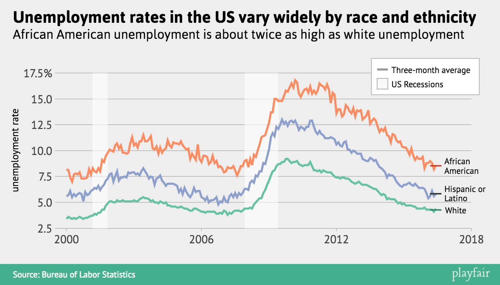
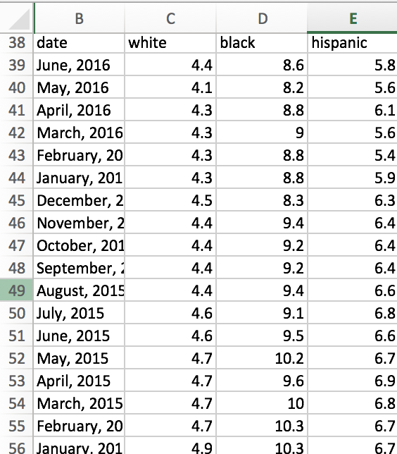
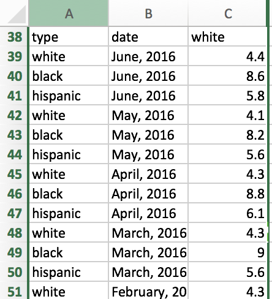
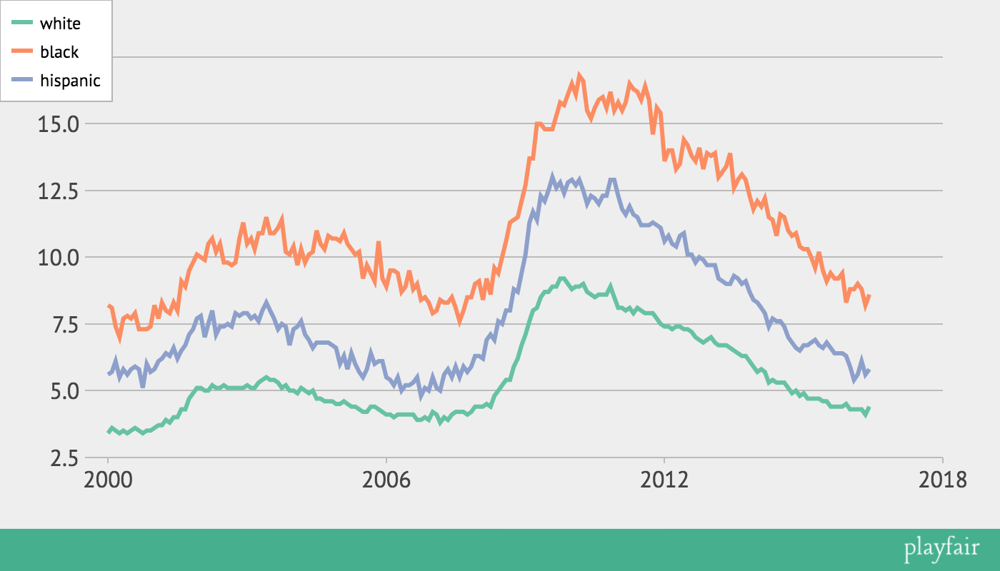
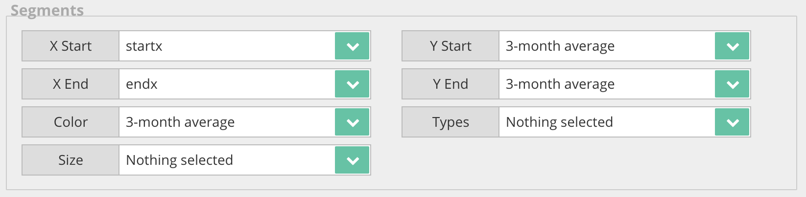

A More Complicated Graph
Very important disclaimer: Playfair is currently only compatible with Chrome.
Again, the hosted version of Playfair is available here: austinclemens.com/Playfair/playfair.html
We're going to make this chart:

You've probably made a chart like this in Excel or a similar program. When you do, you enter your data in a 'wide' format. That is, each of the lines in the graph is represented by a new column. The data might look like this:

This kind of data won't work in Playfair. Playfair requires any grouped data to be entered in a 'long' format. In long data, different groups are stacked on top of one another, and a category column indicates which group the data point belongs to. Here's the same data as above, transformed into long format:

Notice that each date now has three entries: one for each category. The first column now tells us which category is represented by the row. With that in mind, here's the dataset we're going to use for this chart. Go ahead and put it into Playfair:
type date unemployment startx endx 3-month average
white June, 2016 4.4
white May, 2016 4.1
white April, 2016 4.3
white March, 2016 4.3
white February, 2016 4.3
white January, 2016 4.3
white December, 2015 4.5
white November, 2015 4.4
white October, 2015 4.4
white September, 2015 4.4
white August, 2015 4.4
white July, 2015 4.6
white June, 2015 4.6
white May, 2015 4.7
white April, 2015 4.7
white March, 2015 4.7
white February, 2015 4.7
white January, 2015 4.9
white December, 2014 4.8
white November, 2014 5
white October, 2014 4.9
white September, 2014 5.1
white August, 2014 5.3
white July, 2014 5.3
white June, 2014 5.3
white May, 2014 5.4
white April, 2014 5.3
white March, 2014 5.7
white February, 2014 5.8
white January, 2014 5.7
white December, 2013 5.9
white November, 2013 6.1
white October, 2013 6.3
white September, 2013 6.3
white August, 2013 6.4
white July, 2013 6.5
white June, 2013 6.6
white May, 2013 6.7
white April, 2013 6.7
white March, 2013 6.7
white February, 2013 6.8
white January, 2013 7
white December, 2012 6.9
white November, 2012 6.8
white October, 2012 6.9
white September, 2012 7
white August, 2012 7.2
white July, 2012 7.3
white June, 2012 7.3
white May, 2012 7.4
white April, 2012 7.4
white March, 2012 7.3
white February, 2012 7.4
white January, 2012 7.4
white December, 2011 7.5
white November, 2011 7.7
white October, 2011 7.9
white September, 2011 7.9
white August, 2011 7.9
white July, 2011 8
white June, 2011 8.1
white May, 2011 7.9
white April, 2011 8.1
white March, 2011 8
white February, 2011 8.1
white January, 2011 8.1
white December, 2010 8.5
white November, 2010 8.9
white October, 2010 8.6
white September, 2010 8.6
white August, 2010 8.6
white July, 2010 8.5
white June, 2010 8.6
white May, 2010 8.7
white April, 2010 9
white March, 2010 8.9
white February, 2010 8.9
white January, 2010 8.8
white December, 2009 9
white November, 2009 9.2
white October, 2009 9.2
white September, 2009 8.9
white August, 2009 8.9
white July, 2009 8.7
white June, 2009 8.7
white May, 2009 8.5
white April, 2009 8.1
white March, 2009 8
white February, 2009 7.6
white January, 2009 7.1
white December, 2008 6.7
white November, 2008 6.2
white October, 2008 5.9
white September, 2008 5.4
white August, 2008 5.4
white July, 2008 5.2
white June, 2008 5
white May, 2008 4.8
white April, 2008 4.4
white March, 2008 4.5
white February, 2008 4.4
white January, 2008 4.4
white December, 2007 4.4
white November, 2007 4.2
white October, 2007 4.1
white September, 2007 4.2
white August, 2007 4.2
white July, 2007 4.2
white June, 2007 4.1
white May, 2007 3.9
white April, 2007 4
white March, 2007 3.8
white February, 2007 4.1
white January, 2007 4.2
white December, 2006 3.9
white November, 2006 4
white October, 2006 3.9
white September, 2006 3.9
white August, 2006 4.1
white July, 2006 4.1
white June, 2006 4.1
white May, 2006 4.1
white April, 2006 4.1
white March, 2006 4
white February, 2006 4.1
white January, 2006 4.1
white December, 2005 4.2
white November, 2005 4.3
white October, 2005 4.4
white September, 2005 4.4
white August, 2005 4.2
white July, 2005 4.2
white June, 2005 4.3
white May, 2005 4.4
white April, 2005 4.4
white March, 2005 4.5
white February, 2005 4.6
white January, 2005 4.5
white December, 2004 4.5
white November, 2004 4.6
white October, 2004 4.6
white September, 2004 4.6
white August, 2004 4.7
white July, 2004 4.7
white June, 2004 5
white May, 2004 4.9
white April, 2004 5
white March, 2004 5.1
white February, 2004 4.9
white January, 2004 5
white December, 2003 5
white November, 2003 5.2
white October, 2003 5.1
white September, 2003 5.3
white August, 2003 5.4
white July, 2003 5.4
white June, 2003 5.5
white May, 2003 5.4
white April, 2003 5.3
white March, 2003 5.1
white February, 2003 5.1
white January, 2003 5.2
white December, 2002 5.1
white November, 2002 5.1
white October, 2002 5.1
white September, 2002 5.1
white August, 2002 5.1
white July, 2002 5.2
white June, 2002 5.1
white May, 2002 5.1
white April, 2002 5.2
white March, 2002 5
white February, 2002 5
white January, 2002 5.1
white December, 2001 5.1
white November, 2001 4.9
white October, 2001 4.7
white September, 2001 4.3
white August, 2001 4.3
white July, 2001 4
white June, 2001 4
white May, 2001 3.8
white April, 2001 3.9
white March, 2001 3.7
white February, 2001 3.7
white January, 2001 3.6
white December, 2000 3.5
white November, 2000 3.5
white October, 2000 3.4
white September, 2000 3.5
white August, 2000 3.6
white July, 2000 3.5
white June, 2000 3.4
white May, 2000 3.5
white April, 2000 3.4
white March, 2000 3.5
white February, 2000 3.6
white January, 2000 3.4
black June, 2016 8.6
black May, 2016 8.2
black April, 2016 8.8
black March, 2016 9
black February, 2016 8.8
black January, 2016 8.8
black December, 2015 8.3
black November, 2015 9.4
black October, 2015 9.2
black September, 2015 9.2
black August, 2015 9.4
black July, 2015 9.1
black June, 2015 9.5
black May, 2015 10.2
black April, 2015 9.6
black March, 2015 10
black February, 2015 10.3
black January, 2015 10.3
black December, 2014 10.4
black November, 2014 10.9
black October, 2014 10.8
black September, 2014 11
black August, 2014 11.5
black July, 2014 11.6
black June, 2014 10.8
black May, 2014 11.4
black April, 2014 11.5
black March, 2014 12.2
black February, 2014 11.9
black January, 2014 12.1
black December, 2013 11.8
black November, 2013 12.3
black October, 2013 12.9
black September, 2013 13.1
black August, 2013 12.9
black July, 2013 12.6
black June, 2013 13.9
black May, 2013 13.4
black April, 2013 13.2
black March, 2013 13
black February, 2013 13.9
black January, 2013 13.8
black December, 2012 13.9
black November, 2012 13.3
black October, 2012 14.1
black September, 2012 13.6
black August, 2012 13.8
black July, 2012 14.2
black June, 2012 14.4
black May, 2012 13.5
black April, 2012 13.3
black March, 2012 14
black February, 2012 14
black January, 2012 13.6
black December, 2011 15.4
black November, 2011 15.6
black October, 2011 14.6
black September, 2011 15.9
black August, 2011 16.4
black July, 2011 15.9
black June, 2011 16.2
black May, 2011 16.3
black April, 2011 16.5
black March, 2011 15.8
black February, 2011 15.5
black January, 2011 15.8
black December, 2010 15.5
black November, 2010 16.2
black October, 2010 15.6
black September, 2010 16
black August, 2010 15.9
black July, 2010 15.6
black June, 2010 15.2
black May, 2010 15.5
black April, 2010 16.6
black March, 2010 16.8
black February, 2010 16.1
black January, 2010 16.5
black December, 2009 16.1
black November, 2009 15.7
black October, 2009 15.8
black September, 2009 15.3
black August, 2009 14.8
black July, 2009 14.8
black June, 2009 14.8
black May, 2009 15
black April, 2009 15
black March, 2009 13.7
black February, 2009 13.7
black January, 2009 12.7
black December, 2008 12.1
black November, 2008 11.5
black October, 2008 11.4
black September, 2008 11.3
black August, 2008 10.6
black July, 2008 10
black June, 2008 9.4
black May, 2008 9.6
black April, 2008 8.6
black March, 2008 9.2
black February, 2008 8.4
black January, 2008 9.1
black December, 2007 9
black November, 2007 8.5
black October, 2007 8.5
black September, 2007 8
black August, 2007 7.6
black July, 2007 8.1
black June, 2007 8.5
black May, 2007 8.3
black April, 2007 8.3
black March, 2007 8.4
black February, 2007 8
black January, 2007 7.9
black December, 2006 8.3
black November, 2006 8.5
black October, 2006 8.4
black September, 2006 9
black August, 2006 8.8
black July, 2006 9.5
black June, 2006 8.9
black May, 2006 8.7
black April, 2006 9.4
black March, 2006 9.5
black February, 2006 9.5
black January, 2006 8.9
black December, 2005 9.2
black November, 2005 10.6
black October, 2005 9.1
black September, 2005 9.4
black August, 2005 9.7
black July, 2005 9.2
black June, 2005 10.2
black May, 2005 10.1
black April, 2005 10.3
black March, 2005 10.5
black February, 2005 10.9
black January, 2005 10.6
black December, 2004 10.7
black November, 2004 10.7
black October, 2004 10.8
black September, 2004 10.3
black August, 2004 10.5
black July, 2004 11
black June, 2004 10.2
black May, 2004 10.1
black April, 2004 9.8
black March, 2004 10.3
black February, 2004 9.7
black January, 2004 10.4
black December, 2003 10.1
black November, 2003 10.2
black October, 2003 11.4
black September, 2003 11.1
black August, 2003 10.9
black July, 2003 10.9
black June, 2003 11.5
black May, 2003 10.9
black April, 2003 10.9
black March, 2003 10.3
black February, 2003 10.7
black January, 2003 10.5
black December, 2002 11.3
black November, 2002 10.7
black October, 2002 9.8
black September, 2002 9.7
black August, 2002 9.8
black July, 2002 9.8
black June, 2002 10.5
black May, 2002 10.2
black April, 2002 10.7
black March, 2002 10.5
black February, 2002 9.9
black January, 2002 10
black December, 2001 10.1
black November, 2001 9.8
black October, 2001 9.5
black September, 2001 8.9
black August, 2001 9.1
black July, 2001 8
black June, 2001 8.3
black May, 2001 7.9
black April, 2001 8
black March, 2001 8.3
black February, 2001 7.7
black January, 2001 8.2
black December, 2000 7.4
black November, 2000 7.3
black October, 2000 7.3
black September, 2000 7.3
black August, 2000 7.9
black July, 2000 7.7
black June, 2000 7.8
black May, 2000 7.7
black April, 2000 7
black March, 2000 7.4
black February, 2000 8.1
black January, 2000 8.2
hispanic June, 2016 5.8
hispanic May, 2016 5.6
hispanic April, 2016 6.1
hispanic March, 2016 5.6
hispanic February, 2016 5.4
hispanic January, 2016 5.9
hispanic December, 2015 6.3
hispanic November, 2015 6.4
hispanic October, 2015 6.4
hispanic September, 2015 6.4
hispanic August, 2015 6.6
hispanic July, 2015 6.8
hispanic June, 2015 6.6
hispanic May, 2015 6.7
hispanic April, 2015 6.9
hispanic March, 2015 6.8
hispanic February, 2015 6.7
hispanic January, 2015 6.7
hispanic December, 2014 6.5
hispanic November, 2014 6.6
hispanic October, 2014 6.8
hispanic September, 2014 7
hispanic August, 2014 7.4
hispanic July, 2014 7.6
hispanic June, 2014 7.6
hispanic May, 2014 7.7
hispanic April, 2014 7.4
hispanic March, 2014 7.9
hispanic February, 2014 8.1
hispanic January, 2014 8.3
hispanic December, 2013 8.4
hispanic November, 2013 8.7
hispanic October, 2013 9.1
hispanic September, 2013 9
hispanic August, 2013 9.2
hispanic July, 2013 9.3
hispanic June, 2013 9
hispanic May, 2013 9
hispanic April, 2013 9.1
hispanic March, 2013 9.2
hispanic February, 2013 9.7
hispanic January, 2013 9.7
hispanic December, 2012 9.7
hispanic November, 2012 9.9
hispanic October, 2012 10
hispanic September, 2012 9.8
hispanic August, 2012 10.1
hispanic July, 2012 10.1
hispanic June, 2012 10.9
hispanic May, 2012 10.8
hispanic April, 2012 10.4
hispanic March, 2012 10.5
hispanic February, 2012 10.8
hispanic January, 2012 10.6
hispanic December, 2011 11.1
hispanic November, 2011 11.2
hispanic October, 2011 11.3
hispanic September, 2011 11.2
hispanic August, 2011 11.2
hispanic July, 2011 11.2
hispanic June, 2011 11.5
hispanic May, 2011 11.6
hispanic April, 2011 11.9
hispanic March, 2011 11.6
hispanic February, 2011 11.8
hispanic January, 2011 12.3
hispanic December, 2010 12.9
hispanic November, 2010 12.9
hispanic October, 2010 12.3
hispanic September, 2010 12.3
hispanic August, 2010 12
hispanic July, 2010 12.2
hispanic June, 2010 12.3
hispanic May, 2010 12
hispanic April, 2010 12.5
hispanic March, 2010 12.9
hispanic February, 2010 12.7
hispanic January, 2010 12.9
hispanic December, 2009 12.8
hispanic November, 2009 12.4
hispanic October, 2009 12.8
hispanic September, 2009 12.6
hispanic August, 2009 13
hispanic July, 2009 12.5
hispanic June, 2009 12.1
hispanic May, 2009 12.3
hispanic April, 2009 11.4
hispanic March, 2009 11.7
hispanic February, 2009 11.3
hispanic January, 2009 10.1
hispanic December, 2008 9.4
hispanic November, 2008 8.7
hispanic October, 2008 8.8
hispanic September, 2008 8
hispanic August, 2008 8
hispanic July, 2008 7.5
hispanic June, 2008 7.6
hispanic May, 2008 6.9
hispanic April, 2008 7.1
hispanic March, 2008 6.9
hispanic February, 2008 6.2
hispanic January, 2008 6.3
hispanic December, 2007 6.3
hispanic November, 2007 5.9
hispanic October, 2007 5.7
hispanic September, 2007 5.9
hispanic August, 2007 5.5
hispanic July, 2007 5.9
hispanic June, 2007 5.5
hispanic May, 2007 5.8
hispanic April, 2007 5.6
hispanic March, 2007 5
hispanic February, 2007 5.1
hispanic January, 2007 5.5
hispanic December, 2006 5
hispanic November, 2006 5.1
hispanic October, 2006 4.8
hispanic September, 2006 5.5
hispanic August, 2006 5.3
hispanic July, 2006 5.2
hispanic June, 2006 5.2
hispanic May, 2006 5
hispanic April, 2006 5.5
hispanic March, 2006 5.2
hispanic February, 2006 5.4
hispanic January, 2006 5.5
hispanic December, 2005 6.1
hispanic November, 2005 6.1
hispanic October, 2005 6
hispanic September, 2005 6.4
hispanic August, 2005 5.8
hispanic July, 2005 5.5
hispanic June, 2005 5.7
hispanic May, 2005 6
hispanic April, 2005 6.4
hispanic March, 2005 5.8
hispanic February, 2005 6.3
hispanic January, 2005 6
hispanic December, 2004 6.6
hispanic November, 2004 6.7
hispanic October, 2004 6.8
hispanic September, 2004 6.8
hispanic August, 2004 6.8
hispanic July, 2004 6.8
hispanic June, 2004 6.6
hispanic May, 2004 6.9
hispanic April, 2004 7.1
hispanic March, 2004 7.6
hispanic February, 2004 7.4
hispanic January, 2004 7.3
hispanic December, 2003 6.7
hispanic November, 2003 7.4
hispanic October, 2003 7.5
hispanic September, 2003 7.3
hispanic August, 2003 7.7
hispanic July, 2003 8
hispanic June, 2003 8.3
hispanic May, 2003 8
hispanic April, 2003 7.6
hispanic March, 2003 7.8
hispanic February, 2003 7.7
hispanic January, 2003 7.9
hispanic December, 2002 7.9
hispanic November, 2002 7.8
hispanic October, 2002 7.9
hispanic September, 2002 7.4
hispanic August, 2002 7.5
hispanic July, 2002 7.4
hispanic June, 2002 7.4
hispanic May, 2002 7.1
hispanic April, 2002 8
hispanic March, 2002 7.5
hispanic February, 2002 7
hispanic January, 2002 7.8
hispanic December, 2001 7.7
hispanic November, 2001 7.3
hispanic October, 2001 7.1
hispanic September, 2001 6.7
hispanic August, 2001 6.5
hispanic July, 2001 6.2
hispanic June, 2001 6.6
hispanic May, 2001 6.3
hispanic April, 2001 6.4
hispanic March, 2001 6.2
hispanic February, 2001 6.1
hispanic January, 2001 5.8
hispanic December, 2000 5.7
hispanic November, 2000 6
hispanic October, 2000 5.1
hispanic September, 2000 5.8
hispanic August, 2000 5.9
hispanic July, 2000 5.8
hispanic June, 2000 5.6
hispanic May, 2000 5.8
hispanic April, 2000 5.5
hispanic March, 2000 6.1
hispanic February, 2000 5.7
hispanic January, 2000 5.6
white March, 2016 September, 2016 4.266666667
black March, 2016 September, 2016 8.533333333
hispanic March, 2016 September, 2016 5.833333333
There should be no need to change any of the data types. You get a yellow box from the data parser here because all your rows are missing some data. More on this later.
First, let's go to the Lines subtab and select variables. The x-variable is the date variable and the y-variable is the unemployment variable. Now, to group the data, we need to also choose a Line color variable. This will be the type variable. This tells Playfair that a different color should be assigned to each of the values in the type variable. Here's the setup:
Hit the Redraw button and you should get this:

Now I'm also going to add another charting element to this chart. As you can see in the initial screenshot at the top of this tutorial, I want to draw three lines representing the three-month average for each series. Look at the last three rows of my data and you can see how I'm going to bring these in. For each category, I've included a row that has a start date, an end date, and the average value. Go to the Segments subtab and set it up like this:

You can redraw now if you want but it will look crazy. I'm going to delete all key items except for the recession shading and one of the segment lines. I can edit both of those on the graph when I redraw. After adding some text and redrawing the graph, I'm also gonna use Playfair's on-chart editing features to make the average lines thicker and change their colors. Finally, I right-click on each line and choose 'Label Data.' This creates some text labels for each line off to the right of where they end. In the finished product, I have edited that text and used the arrow keys to position it more carefully.
The final tutorial is about the Settings tab, which allows you to do a bunch of crazy stuff to the layout and presentation of a given graph.
Next: The settings tab
Previous: Annotations